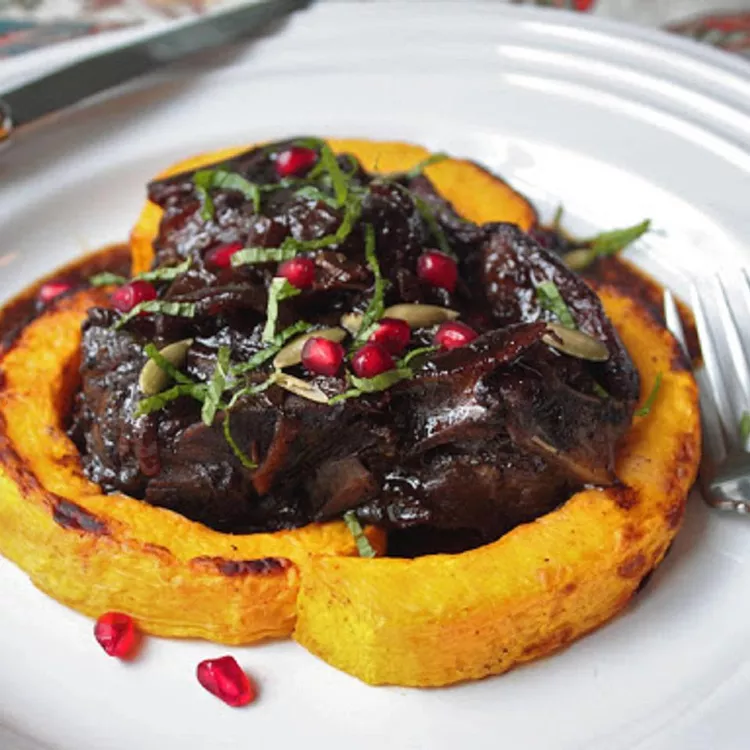

Home
Lamb braised in pomegranate

Description
This lamb with pomegranate sauce is about as seasonally appropriate as it gets and one of the best things I've tasted in a long time.
Ingredients
- 3 pounds lamb shoulder blade chops
- Salt and freshly ground pepper to taste
- 1 tablespoon vegetable oil
- 1 onion, sliced
- 1 pinch salt
- 4 cloves garlic, sliced
- 2 cups pomegranate juice
- ⅓ cup aged balsamic vinegar
- 8 fresh mint leaves
- ¼ teaspoon dried rosemary
- ¼ teaspoon red pepper flakes
- 1 tablespoon honey, or more to taste
- 2 tablespoons pomegranate seeds
- 1 tablespoon sliced fresh mint leaves
- 1 tablespoon pumpkin seeds
Steps
- Preheat the oven to 300 degrees F (150 degrees C).
- Generously season lamb chops with salt and black pepper.
- Heat vegetable oil in a Dutch oven over high heat. Place lamb chops in Dutch oven and cook until browned on all sides, about 8 minutes. Transfer lamb to a plate and reduce heat to medium.
- Stir onion and a pinch of salt into the Dutch oven; cook until onions are slightly golden, about 3 minutes. Stir in garlic and cook for 30 seconds.
- Pour pomegranate juice into the Dutch oven and scrape any browned bits off of the bottom of the pot. Pour in balsamic vinegar, increase heat to high, and bring to a boil.
- Stir mint leaves, rosemary, and red pepper flakes into pomegranate juice mixture. Continue to boil until liquid is reduced by half, about 10 minutes. Return lamb and any accumulated juices to the Dutch oven, spoon pomegranate mixture over lamb, and cover.
- Cook in the preheated oven until lamb is fork tender, about 2 hours.
- Transfer lamb to a plate and set the Dutch oven on the stovetop over high heat. Bring pomegranate mixture to a boil; cook, skimming any fat that accumulates, until liquid is reduced by 1/3, about 5 minutes.
- Stir in honey and season with salt and black pepper. Return lamb to the Dutch oven; stir to combine. Garnish with pomegranate seeds, sliced mint leaves, and pumpkin seeds.